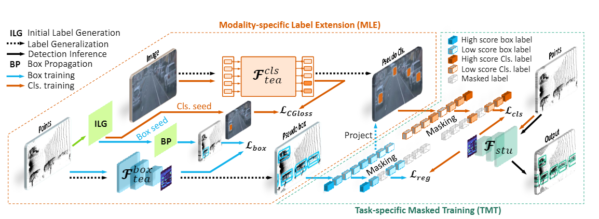

|
|
Xusheng Guo 郭徐晟 |

I am currently studying in Xiamen University. My research interests focus on computer vision and machine learning, particularly in 3D object detection.
31520241154502@stu.xmu.edu.cn
News
- [2025/11] One paper accepted by AAAI 2026, first author.
- [2025/07] One paper accepted by ICCV 2025, third author.
- [2025/03] One paper accepted by CVPR 2025(Highlight), third author.
- [2023/10] One paper accepted by MDPI Electronic 2023, co-first author.
Publications
 |
Xusheng Guo, Wanfa Zhang, Shijia Zhao, Qiming Xia, Xiaolong Xie, Mingming Zhang, Hai Wu2,✉, Chenglu Wen1,✉, Cheng Wang
OWL: Unsupervised 3D Object Detection by Occupancy Guided Warm-up and Large Model Priors Reasoning AAAI, 2026 |
|  | Hai Wu, Hongwei Lin, Xusheng Guo, Chenglu Wen✉, Cheng Wang
Motal: Unsupervised 3D Object Detection by Modality and Task-specific Knowledge Transfer ICCV, 2025 |
 |
Shijia Zhao*, Qiming Xia*, Xusheng Guo, Pufan Zou, Maoji Zheng, Hai Wu, Chenglu Wen✉, Cheng Wang
SP3D: Boosting Sparsely-Supervised 3D Object Detection via Accurate Cross-Modal Semantic Prompts CVPR(Highlight), 2025 |
 |
Xiaolong Xie*, Xusheng Guo*, Wei Li✉, Jie Liu, Jianfeng Xu
Deform2NeRF: Non-Rigid Deformation and 2D–3D Feature Fusion with Cross-Attention for Dynamic Human Reconstruction MDPI Electronic, 2023 |
Activities
- [2025/11] Served as a reviewer for AAAI and CVPR.
- [2025/11] Our Awesome-Label-Efficient-3D-Object-Detection project has been released! Awesome-Label-Efficient-3D-Object-Detection
- [2024/06]南昌大学优秀毕业论文
- [2023/10]华为智能基座奖学金
- [2023/06]蓝桥杯总决赛大学A组国家二等奖
- [2023/04]江西省蓝桥杯软件组一等奖
- [2023/04]江西省计算机设计大赛三等奖
- [2022/06]MathorCup数学建模国家三等奖
- [2021/10]全国大学生算法设计与编程挑战赛铜奖
Academic Competition and Awards
|
Occasionally sleep in and eat more when waking up. 时不时也睡个懒觉，醒来多加餐。 |